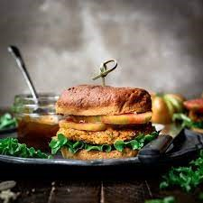
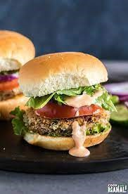

Spiced Veggie Burgers
Category:Indian, veggie food
This recipe is adequate for 5 people.
Ingredients for cooking:
- 1 medium red onion, chopped
- 1 small zucchini, diced
- 2 medium potatoes, boiled + smashed
- 0.23 L of white mushrooms, finely diced
- 1/2 cup brown rice, cooked
- 1/2 cup baby spinach, chopped
- 4 tbsp extra-virgin olive oil
- 4 tbsp cilantro, chopped
- 4 tsp cornstarch
- 4 tsp Italian breadcrumbs
- 2 tbsp canola oil
- 1 tsp cumin seeds
- 1/2 tsp turmeric
- 1 tbsp fennel seeds
- Salt and black pepper


Cooking Directions:
- (1)In a heavy bottom skillet, heat the canola oil over medium-high heat, once heated, add the cumin seeds. Once it starts crackling, add the turmeric and fennel seeds.
- (2)Add the onions, cook until soft. Add the zucchini, mushrooms and saute until all the water has evaporated, while adding pepper and salt.
- (3)Set aside to cool slightly.Combine the mixture with brown rice and potatoes in a large bowl.
- (4)Add spinach, ginger, serrano chili, cilantro, cornstarch and Italian breadcrumbs, then add two tablespoons of extra-virgin olive oil to the mixture.Heat the remaining extra-virgin olive oil in a 12-inch non-stick skillet over medium heat. Add the patties and cook until they are golden brown on both sides.
- (5)Dissolve cornstarch into water, then mix into the sauce. Cook for 5 to 10 minutes, or until thickened.
For more information, below links are sugessted: